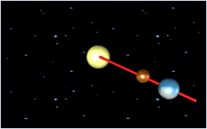
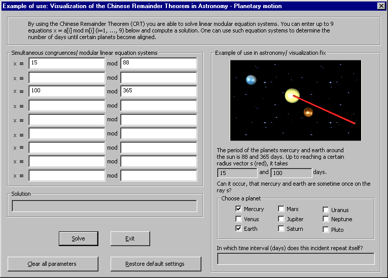
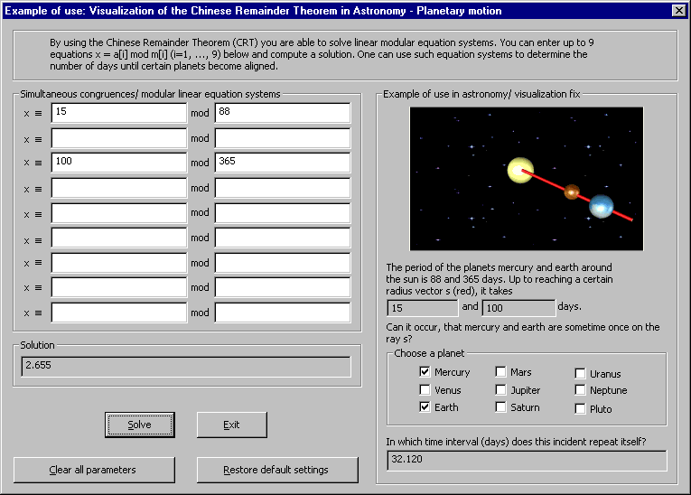
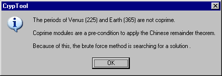
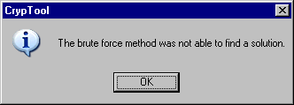

Dialog Planetary Motion and the Chinese Remainder Theorem
This dialog can be reached through the menu pathway: Individual Procedures \ Applications of the Chinese Remainder Theorem (CRT) \ Astronomy and Planetary Motion. It is supposed to help you understand the Chinese Remainder Theorem in astronomy.
Suppose mi (i = 1, ..., 9) are pairwise relatively prime (coprime) positive integers and larger than 1, then the system of simultaneous congruences has a unique solution x.
One can use such equation systems to find out, in how many days certain planets stand lined up like on a pearl string.
One can also use such equation systems to build a code which allows any 3 of 5 key-holders to open a bank vault (Secret Sharing by CRT).
You can enter up to 9 equations x ≡ ai mod mi (i = 1, ..., 9) and a solution will be computed.
Default Settings :
The following default settings are used after each start of Astronomy and Planetary Motion.
The two planets mercury (represented brown) and earth (represented blue) were selected, which are orbiting the sun (represented yellow) at a constant speed.
In our example:
Mercury's orbital period is 88 days, and Earth's is 365. From the positions shown, Mercury and Earth require 15 days and 100 days, respectively, to reach the red vector.
Now one can compute using the Chinese Remainder Theorem the number of days until Mercury and Earth align in this particular vector.

The animation is symbolic, which means:
Because of the differences in the values, the alignment event repeats, in this graphical representation, every 12 mercury orbits (3 earth orbits), while in reality, it happens only every 32,120 days.
Procedure by choosing one planet:
1. An equation in the form x ≡ a mod m represents exactly one planet.
2. The required time (in days), a planet need to reach the red orbit vector s, is entered into the first field (variable a) of a row.
3. The rotation time (in days) of a planet can either be manually entered into the respective field or automatically selected by setting a check mark in the "Choose a planet", section lined up.
Therefore, the equation for mercury is x ≡ 15 mod 88 and for earth x ≡ 100 mod 365.

To compute the solution of the system of simultaneous congruences, click on the Solve button. The solution will be displayed in the text field Solution. For our example we receive 2,655 days.
At the same time, the repetition interval (in days) is calculated. The result 32,120 days is shown on the last output field below the animation.

In the dialog, the user can either click on the button, Clear all parameters, to clear all fields, or click on the button Restore default settings to restore the initial Mercury-Earth example.
Clicking Exit closes the dialog and leads back to CrypTool main window.
If these moduli mi are not coprime, then a dialogbox similiar to this is displayed:

If you click OK, a brute-force algorithm tries to solve the system of simultaneous congruences. If there's no solution, the user receives the following message:

Enhancements of this scenario:
The user can extend the scenario up to 9 planets to represent our whole solar system.
Independent of the shown astronomy example this application can calculate modular equation systems with up to 9 arbitrary integer parameters.
At any time you can access context-sensitive help by pressing F1.